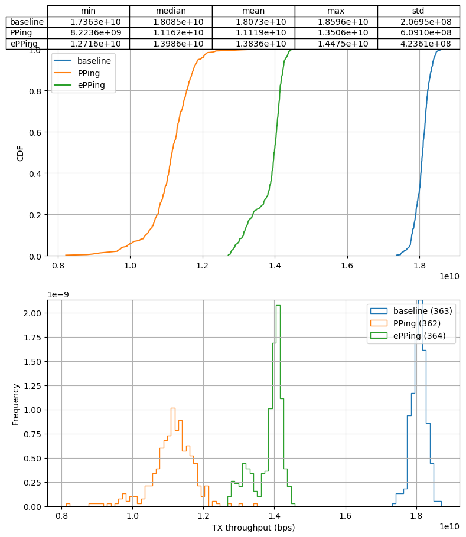

Progress update 2022-02-14
Simon Sundberg
Created: 2022-02-21 mån 09:19
Table of Contents
- 1. PPing
- 2. Pinning packet processing to single core
- 2.1. No pinning - single flow
- 2.2. No pinning - 1000 flows
- 2.3. Traffic pinned, PPing pinned diff - single flow
- 2.4. Traffic pinned, PPing pinned diff - 1000 flows
- 2.5. Traffic pinned, PPing pinned same - single flow
- 2.6. Traffic pinned, PPing pinned same - 1000 flows
- 2.7. No RTT events - 1 + 1000 flows
- 2.8. No RTT events, PERCPU maps - 1 + 1000 flows
- 2.9. No RTT events, minimal logic - 1 + 1000 flows
- 2.10. Dummy BPF progs - 1 + 1000 flows
- 3. Time to discuss
- 4. CPU spikes caused by writing large amounts of data to disk
- 5. Other
1 PPing
- Done tests with pinning traffic to single core
- Idea is to make the middle machine (where PPing runs) the bottleneck
- Tests show decreased throughput for both PPing and ePPing
- Test results show very poor results for ePPing with larger number of flows
- Done some quick tests to see if ePPing could easily be optimized, but they've been largely negative so far
- Discovered some spikes in ePPing performance related to kernel flushing dirty pages to disk
2 Pinning packet processing to single core
- Sets a single rx queue and pin all relevant IRQs to single CPU
- Tested different ways of pinning PPing
- Not pinning PPing
- Pinning PPing to same core as irqs
- Pinning PPing to different core than irqs
- The good news:
- (e)PPing now has a measurable impact on throughput
- For low number of flows ePPing has much lower overhead than PPing
- The bad news:
- At high number of flows (> 100) ePPing is worse than PPing
- Even without sending RTT reports ePPing overhead is considerable
2.1 No pinning - single flow
2.2 No pinning - 1000 flows
2.3 Traffic pinned, PPing pinned diff - single flow

2.4 Traffic pinned, PPing pinned diff - 1000 flows
2.5 Traffic pinned, PPing pinned same - single flow
2.6 Traffic pinned, PPing pinned same - 1000 flows

2.7 No RTT events - 1 + 1000 flows

2.8 No RTT events, PERCPU maps - 1 + 1000 flows

2.9 No RTT events, minimal logic - 1 + 1000 flows
2.10 Dummy BPF progs - 1 + 1000 flows


3 Time to discuss
3.1 What is the main use case for ePPing?
- For evalutation to be interesting, should be related to real world use cases
- If running on end-host, why not just fetch RTTs from kernel instead?
- Most middleboxes likely use DPDK for improving performance, for which ePPing won't work(?)
3.2 How to move forward?
- I find this performance very disappointing
- Already way behind schedule
- See two fundamentally different ways forward
- Cut the losses and move on
- Try write paper on current state of ePPing
- Future work on ePPing unlikely
- Try to fix ePPing
- Invest more time in investigating performance issues and modify ePPing to address them
- May allow for future work with ex. use case studies or extending ePPing
- Cut the losses and move on
3.3 How to manage performance under heavy load?
- Limited update rate of TCP timestamps
- More flows -> more timestamps to match -> more load
- Currently have per-flow rate limit sampling
- Suffers the same issue of more flows -> more samples
- Limit number of flows?
- Indirectly done via limit of flow state map
- Limit information gathered per flow?
- Currently done in time domain with rate limit
- Employ some much more sophisticated sampling strategy based on statistics and information theory etc?
4 CPU spikes caused by writing large amounts of data to disk
- Noticed some very periodical spikes in CPU utalization for ePPing at 1k flows
- Even with packet processing and ePPing pinned to single core, CPU utalization > 100%
- Turned out to be kernel flushing dirty pages to disk
- Occurs for PPing as well, but less noticle due to it writing ~20k reports/s vs 120k reports/s for ePPing at 1k flows
4.1 CPU spikes due to disk I/O
5 Other
- Will spend a lot of time on courses the next couple of months
- Data plane programming: 17% until 1/6
- Research ethics: ~40% until 11/3
- Statistical methods: ~53% between 28/2 - 28/3
- Leaves between 23% to -30% for other PhD work (including ePPing)
- And the one day I have this week I'll likely have to spend on the DISCO reading course